When I first came across batch normalization, I hated it. It looked like an arbitrary hack. Worse, I had a tough time finding everything I needed to know to see how it worked. Since then I’ve come to see that it's a wildly effective method and that it drops tantalizing hints at deeper machine learning concepts. Here’s the tutorial I wish I had found at the outset.
The punchline
Batch normalization is an element-by-element shift (adding a constant) and scaling (multiplying by a constant) so that the mean of each element's values is zero and the variance of each element's values is one within a batch. It's typically inserted before the nonlinearity layer in a neural network. It works quite well. But we're still trying to figure out why.
Normalization
If you collect the activity of a single node across many iterations, you can represent that node's activities as a distribution.
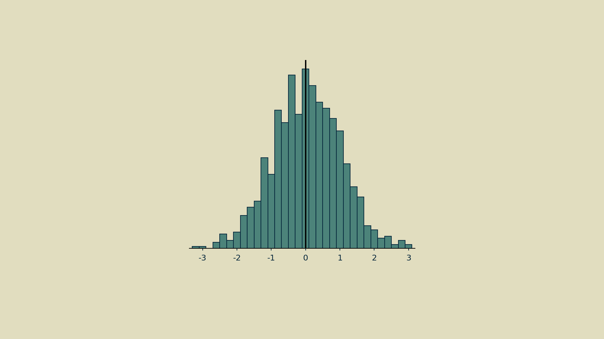
That distribution can fall far from the mean.
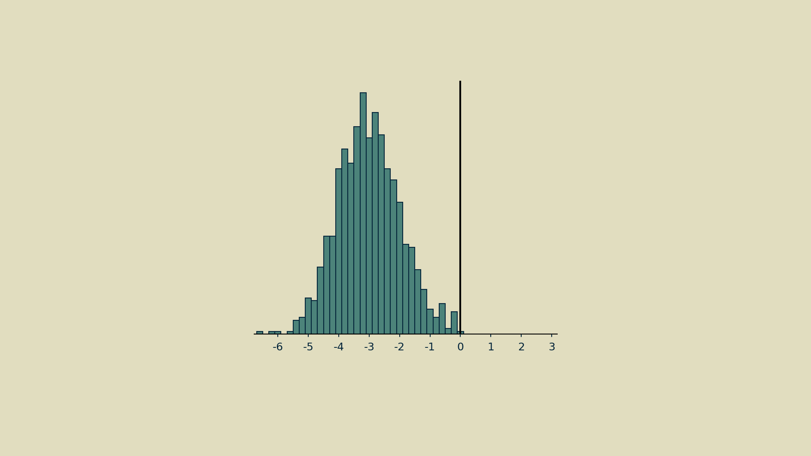
And it can take on odd shapes.
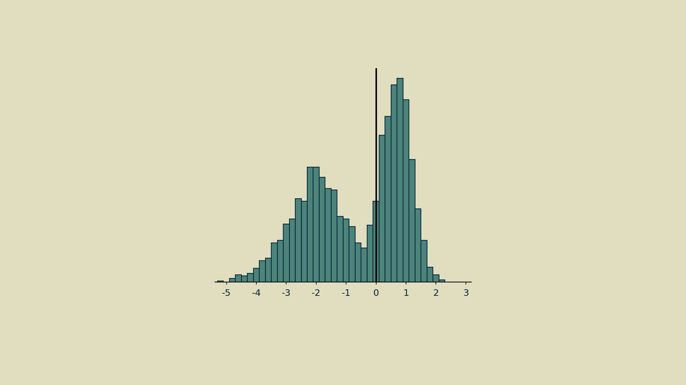
Normalization can mean different things, but in this case it means making it as close as possible to a normal distribution: giving it a mean of zero and a variance of one. Step one is to subtract the mean to shift the distribution.
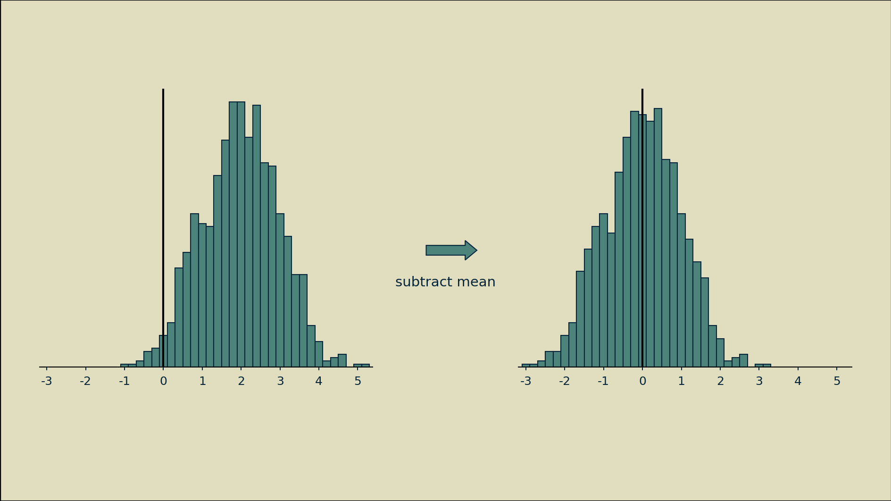
Step two is to divide all the shifted values by their standard deviation (the square root of the variance).
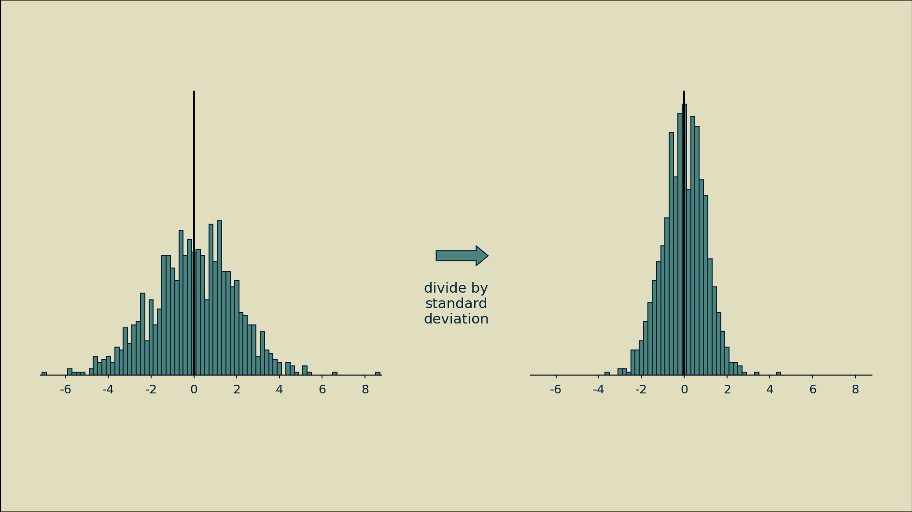
The end result may not have a nice normal bell shape, but at least it will have a zero mean and unit variance.
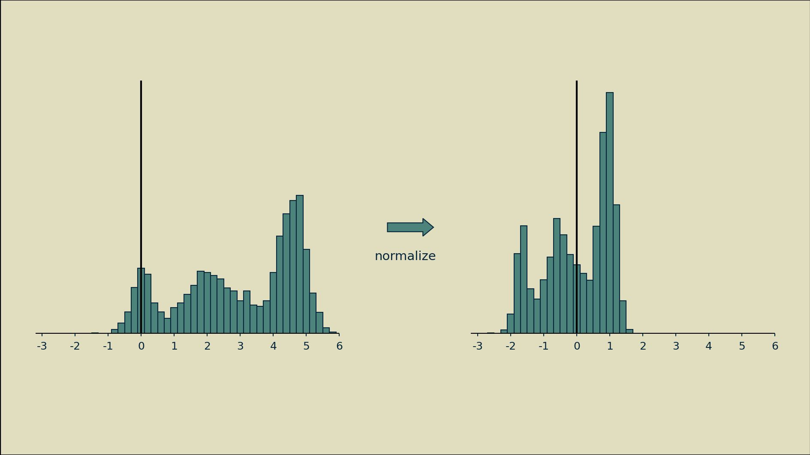
Batch
How many observations of a node's activity should be included when normalizing? There is a trade-off. Including too few observations will result in noisy estimates for mean and variance, making the normalization step a source of erratic changes, rather than a source of stability. For example, all the histograms below were drawn from the same distribution.
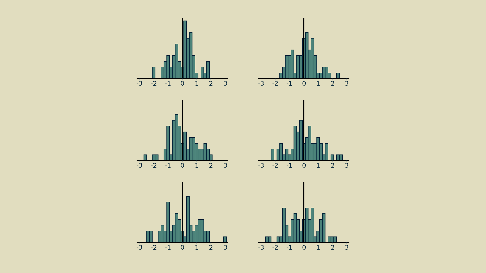
On the other hand, all the parameters in the model are being updated at every timestep, so if we wait too long, we will in effect be straddling different models and the node's meaning may have changed entirely.
Trial and error has shown that a convenient middle ground is the size of one batch - the number of parallel feedforward-feedback runs that take place during a single time step. Batching has become commonplace as neural networks are most often trained on specialized hardware, like graphical processing units (GPUs), that compute the required matrix multiplications in parallel at blazing speeds. Driven by the interplay between model size and GPU capacity, batch sizes tend to run between 2^6 and 2^10 (between 64 and 1024), and these have been shown to work well for normalization. They give estimates of mean and variance that are accurate enough to help, but still change rapidly enough to keep up with any changes the model makes.
Batch normalization
This batch-wise normalization of each node's activities ensures that it will appear to produce a set of zero-mean, unit-variance outputs to everything upstream of it in the network. A concise description of this is given by Ioffe and Szegedy in their 2015 paper introducing the method.
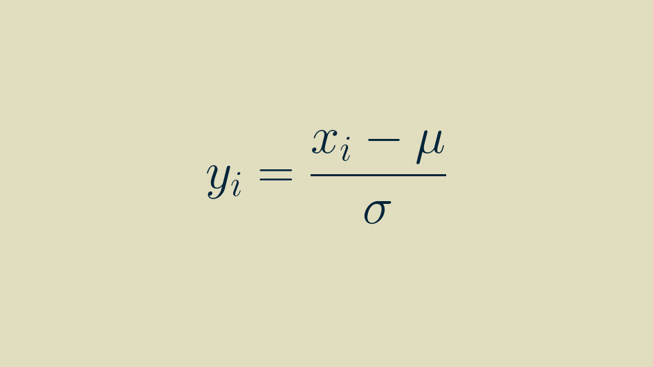
This occurs element-by-element. Within each batch, the activities of each element are separately shifted and scaled so that they have a zero mean and unit variance within the batch.
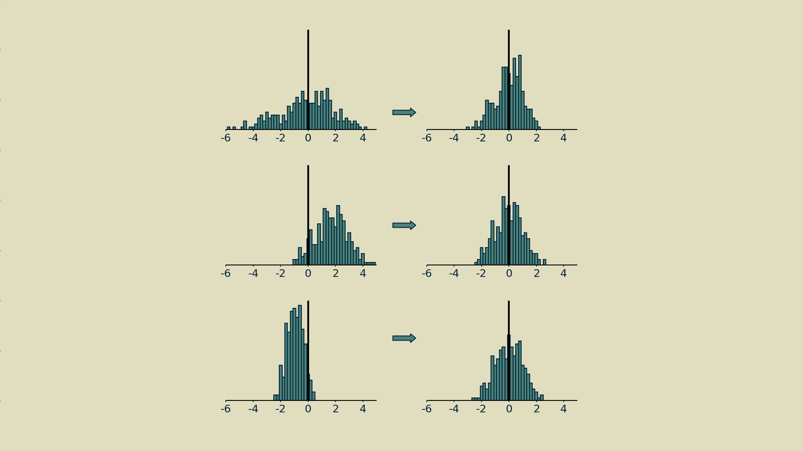
The mean and variance of one node's activities will be independent from that of another.
Scale (gamma) and shift (beta) transformation
There is also an optional scale-and-shift that can be learned to further improve performance, known as an affine transformation. The shift parameter is represented by beta and the scale parameter by gamma in the full definition of batch normalization.
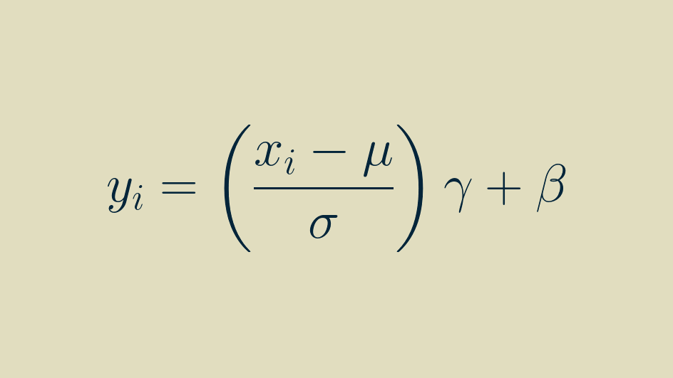
The affine transformation is a popular option. It's the default in Tensorflow and PyTorch. An informal survey of practitioners on Twitter and LinkedIn shows that they tend to use batch normalization with beta and gamma enabled about three times out of four. They improve accuracy on image classification benchmarks by a few percent, and they seem to sparsify feature activations.
Affine transformations are definitely helpful, but we'll set them aside for now. They are the spinning rims of batch normalization: cool but not essential to its function. They could just as easily be separated out into their own layer. There's no reason to bundle them with batch normalization. The most interesting part of what batch normalization does, it does without them.
A note on using batch normalization with convolutional layers
Although batch normalization is usually used to compute a separate mean and variance for every element, when it follows a convolution layer it works a little differently. Instead, it just computes one mean and variance for each channel (not a separate one for every pixel of every channel).
This is due to the fact that, thanks to convolution, every pixel value within a channel is generated by the same convolutional kernel. They are all part of the same pool of activities that result from that kernel, and so can be reasonably lumped together into the same activity distribution.
How does batch normalization really work?
Realistically, the first question to ask here is Does it matter? Why should you care about how it works, as long as it brings the loss down? If your focus is on climbing a leaderboard, then it probably doesn't and you can skip this section. But if you'd like to build a deeper intuition for what's going on, and possibly introduce some new customizations to your toolbox, then understanding why batch normalization is so effective can help you out.
Internal covariate shift
This phrase, taken from the title of Ioffe and Szegedy's original batch normalization paper, is described in that paper as the change in nodes' activation distributions due to changes in network weights. The authors give several examples of mechanisms that can cause those distributions to wander far from normal, and postulate ways in which that may hurt its performance or make it difficult to train.
The nonlinearity functions that lie at the heart of neural networks all do their most interesting work around the neighborhood of zero, plus or minus one or two. If a node's activity distribution climbs too far away from that, it can escape the reach of the backpropagation training signal. It is said to enter a gradient plateau.
In a wonderfully informative notebook post, David C Page illustrates this shift in nodes' distributions and how batch normalization corrects for it. An accompanying Twitter thread gives additional context.
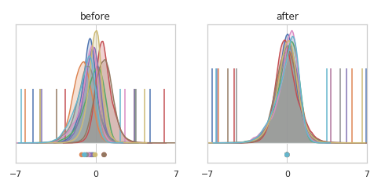
He also investigates the curvature (sometimes called "smoothness") of the loss function and finds that the very directions in which the loss function is least smooth are the directions that get adjusted by batch normalization. In other words, batch normalization tends to smooth out the loss function. This allows for more aggressive training rates, and shorter training runs.
Smoothing of the gradient
A subsequent paper demonstrates that if you carefully construct your example you can in fact get all the benefits of batch normalization while intentionally inducing distributional shift in nodes' activities. This suggests that stabilizing nodes' activity distributions is a side effect of whatever good thing batch normalization does, rather than the root cause.
"Internal covariate shift" causes some confusion
If you care to descend down this rabbit hole, this Twitter thread has some back and forth on the precise definition of internal covariate shift. The conversation appears to get a bit bogged down in fine interpretations of terminology. My takeaway is that "internal covariate shift" is a broad category and does not necessarily mean "a shift in nodes' activity distribution away from normal."
This lack of clarity is widely manifest. A very non-scientific poll of the community on Twitter and LinkedIn suggests that there is little consensus around whether internal covariate shift or gradient smoothing is the cause of batch normalization's success.
As far as I can tell, there is one point that everyone agrees on: batch normalization smooths the loss landscape. Exactly how it does this and precisely how this generates all the resulting benefits is still the topic of investigation. If you're interested in diving deeper I recommend starting with this paper. For a broader survey of possible explanations and their implications, the Wikipedia entry gives a good starting place.
How can I do batch normalization when I'm not working with batches?
Batch normalization is a fascinating example of a method molding itself to the physical constraints of the hardware. The method of processing data in batches co-evolved with the use of GPUs. GPUs are made of lots of parallel processors, so breaking the training job up into parallel batches made perfect sense as a trick for speeding it up. Once in batches, batch-averaging the gradient was a natural thing to try. Batch normalization followed after.
But what if you're not using a GPU? Not everyone can afford one, and not every problem demands one. This limitation of batch normalization has been addressed in a sequence of advances, beginning with batch renormalization, moving on to streaming normalization and culminating in online normalization, a highly performant variant of batch normalization that works beautifully, even with a batch size of one. It's probably not coincidence that the paper was published by a team from Cerebras Systems, a startup that is building new neural networks chips from scratch, which are decidedly not GPUs.
Online normalization has been implemented in Cottonwood, the CPU-centric machine learning framework I'm building. If you are writing your own neural networks from scratch and running them on your laptop, you can still get the benefits of batch normalization, without having to port your code to cloud GPUs or go through a heavyweight framework.
The cool bit
What made me fall in love with batch normalization is its adaptive signal processing. Here are a few examples.
Autoscaling of pixel values
Image pixel values come in a variety of ranges, sometimes 0 to 1, sometimes 0 to 255, sometimes something else if there's been some fancy preprocessing. If you'd rather not go look it up, verify it in your data, and assume that it never drifts or decays, you can just slip a batch normalization layer right after the input layer of your network and it's taken care of it all for you.
Multimodal inputs
When you have inputs from several different types of sensors or data streams, each is likely to have its own range and distribution. This can be tough for neural networks to handle. A batch normalization layer brings them all into a similar distribution for apples-to-apples comparison and computation.
Constant inputs
Occasionally one of the inputs to a model is constant, whether due to some quirk of data selection or a broken sensor somewhere. Many models can learn to ignore these if they provide no predictive value, but that's not a guaranteed approach. A batch normalization layer will adapt to a constant input element, reducing it to zero.
Two-level inputs
For an input element that splits its time between two distinct values, a low and and high, batch normalization performs the convenient service of making those values plus and minus one, whatever they were originally.
Rarely active elements
For inputs that spend most of their time at a baseline level, but occasionally deviate from that, batch normalization helpfully shifts that baseline to zero and magnifies the deviation. This amplifies the underlying information carried by that input element while attenuating the constant background level. And all of this without having to specify any additional thresholds, constants, or hyperparameters.
This can also happen deep within a network, say at the bottleneck layer of an autoencoder, or at the far end of a network, near the categorical output layer. Some deeper representations or categories may occur infrequently. In this case, batch normalization helps the network out by shouting extra loud when they do occur.
Drifting elements
When working in applications, the distributions of inputs can change slowly over time. When these are distractions, rather than the phenomena of interest, a batch normalization layer will remove the shifting baselines automatically and preserve the fluctuations.
This property is exactly what makes batch normalization so useful at all levels of the network. By its nature, weights are changing throughout during training. The distribution of every element is drifting. A batch normalization layer before every linear and convolution layer grants them some stability. It allows them to train more effectively, since their inputs will always fall within the same region of their nonlinearity function, and it makes them less sensitive to interactions with changes in weights elsewhere in the network.
Taken together, these properties do a little bit of taming to the wildly unpredictable animals that deep neural networks are. Batch normalization makes network more shareable, more easily reusable. A neural network is a nonlinear processor so seemingly benign things like input scaling and offset make a difference.
Used well, batch normalization can get you a bit closer to your goals. Best of luck!
BTW here's the Python code for making all the plots in this post.